| Overview |
| Axis Charts are all charts plotted against a Axis, such as: Bar, Stacked Bar, Line, Point, etc... jCharts manages properties of the Axis through the AxisProperties Object. |
| Horizontal Plots |
|
Currently only the Bar, Clustered Bar, and Stacked Bar charts support horizontal plots. This is accomplished by
passing a 'true' in the call to create the AxisProperties Object. You will get an Exception if you try to
plot any other types on a Horizontal plot.
|
|
AxisProperties axisProperties= new AxisProperties( true );
|
| 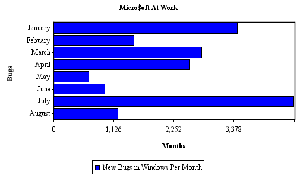 |
| The AxisProperties Object |
|
The AxisProperties Object contains separate property objects for each Axis. The base class for these property Objects is
AxisTypeProperties. Then there is a LabelAxisProperties and a DataAxisProperties for each Axis, or simply two DataAxisProperties
for a Scatter Plot. |
|
A Vertical Plot, excluding Scatter Plots, would type them as follows: |
|
LabelAxisProperties xAxisProperties= (LabelAxisProperties) axisProperties.getXAxisProperties(); DataAxisProperties yAxisProperties= (DataAxisProperties) axisProperties.getYAxisProperties(); |
|
A Scatter Plot would type them as follows: |
|
DataAxisProperties xAxisProperties= (DataAxisProperties) axisProperties.getXAxisProperties(); DataAxisProperties yAxisProperties= (DataAxisProperties) axisProperties.getYAxisProperties(); |
|
A Horizontal Plot would type them as follows: |
|
DataAxisProperties xAxisProperties= (DataAxisProperties) axisProperties.getXAxisProperties(); LabelAxisProperties yAxisProperties= (LabelAxisProperties) axisProperties.getYAxisProperties(); |
|
|
| Rounding |
|
By default, the Y-Axis rounds to the nearest whole number. This can be changed by using a method on the DataAxisProperties Object.
Note: when using a user defined scale, be aware your increment will be rounded by this rounding factor. The following example sets the y-axis to round to the nearst 1/100 or 10 to the -2'nd power. |
|
DataAxisProperties dataAxisProperties= (DataAxisProperties) axisProperties.getYAxisProperties(); dataAxisProperties.setRoundToNearest( -2 ); |
| 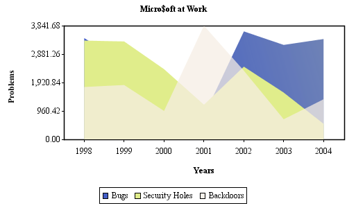 |
| Vertical X-Axis Labels |
| By default, the X-Axis labels are horizontal. They can be changed to the vertical by using a method on the AxisProperties Object. The labels on the y-Axis can not be vertical. |
|
axisProperties.setXAxisLabelsAreVertical( true ); |
| 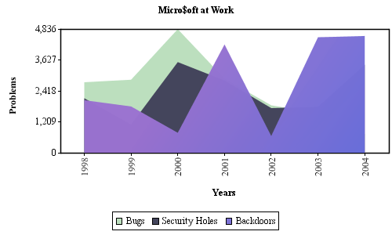 |
| User Defined Scale |
|
By default, the value Axis will compute a scale range that includes all points in the data set and is rounded to the power of ten specified.
Make note of that last statment. If you enter a scale increment of 35 and use a rounding value of 100, your increment will become 100. The following example sets the axis to start at -2000 and go up in increments of 850. It also sets the rounding factor to the nearst 0/100 or 10 to the 0'th power, so we will see increments of 850. Had this been left at the default value, the increment would have been 900. |
|
AxisProperties axisProperties= new AxisProperties(); DataAxisProperties dataAxisProperties= (DataAxisProperties) axisProperties.getYAxisProperties(); dataAxisProperties.setUserDefinedScale( -2000, 850 ); dataAxisProperties.setRoundToNearest( 0 ); |
| 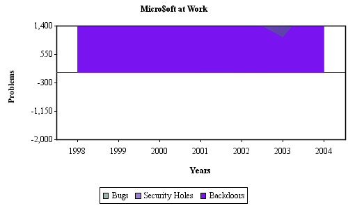 |
| Custom Scale Calculators |
|
|
| Number Of Items On Y-Axis |
|
By default, the Y-Axis displays 5 values. This can be changed by using a method on the DataAxisProperties Object.
The following example sets the Y-Axis to display 8 items. |
|
AxisProperties axisProperties= new AxisProperties(); DataAxisProperties dataAxisProperties= (DataAxisProperties) axisProperties.getYAxisProperties(); dataAxisProperties.setNumItems( 8 ); |
| 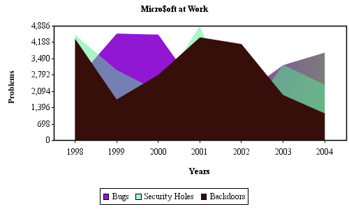 |
| Zero Line |
|
If the values on the axis include negative and positive values, a line indicating where zero falls
will be drawn on the chart. This is managable through a method on the DataAxisProperties Object.
The first example sets the Y-Axis to not display the zero grid line. I included a user specified scale to force the inclusion of negative scale values just to illustrate the zero grid line functionality. |
|
AxisProperties axisProperties= new AxisProperties(); DataAxisProperties dataAxisProperties= (DataAxisProperties) axisProperties.getYAxisProperties(); dataAxisProperties.setUserDefinedScale( -2000, 1200 ); dataAxisProperties.setShowZeroLine( false ); super.exportImage( this.getChart( axisProperties ), "noZeroLine" ); |
| 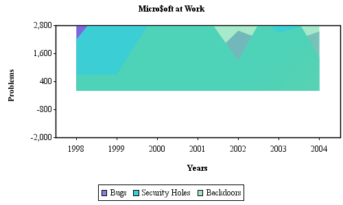 |
|
The next example sets the zero grid line. to be red and alters the Stroke with which it is drawn. I included a user specified scale to force the inclusion of negative scale values just to illustrate the zero grid line functionality. |
|
AxisProperties axisProperties= new AxisProperties(); DataAxisProperties dataAxisProperties= (DataAxisProperties) axisProperties.getYAxisProperties(); dataAxisProperties.setUserDefinedScale( -2000, 1200 ); BasicStroke stroke= new BasicStroke( 1f, BasicStroke.CAP_ROUND, BasicStroke.JOIN_ROUND, 5f, new float[]{ 5f, 5f, 10f, 5f}, 4f ); ChartStroke zeroLineChartStroke= new ChartStroke( stroke, Color.red ); dataAxisProperties.setZeroLineChartStroke( zeroLineChartStroke ); |
| 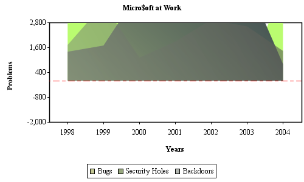 |
| Grid Lines |
|
By default, there are Color.lightGray horizontal grid lines corresponding to each value on the Y-Axis.
However, there are several options available to control the rendering of Grid Lines.
Both axis can display grid lines. They have their choice of ChartStroke Objects independently. Another feature is to only display Grid Lines with a corresponding Label. The X-Axis will compute a multiple of the number of labels on the X-Axis to display such that the labels do not overlap. This is useful when plotting large data sets. This feature is not available on the Y-axis. |
|
AxisProperties axisProperties= new AxisProperties(); ChartStroke xAxisGridLines= new ChartStroke( new BasicStroke( 1.0f ), Color.red ); axisProperties.getXAxisProperties().setGridLineChartStroke( xAxisGridLines ); axisProperties.getXAxisProperties().setShowGridLines( AxisTypeProperties.GRID_LINES_ONLY_WITH_LABELS ); axisProperties.getYAxisProperties().setShowGridLines( AxisTypeProperties.GRID_LINES_NONE ); |
| 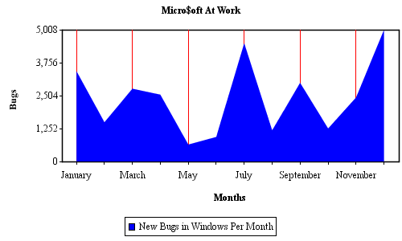 |
| Tick Marks |
|
All Axis Charts display 'tick' marks on each scale position. There are several properties you
can use to change the default behavior.
For example, if you would like not to see the tick marks, you can turn them off. |
|
AxisProperties axisProperties= new AxisProperties(); axisProperties.getXAxisProperties().setShowTicks( AxisTypeProperties.TICKS_NONE ); |
| 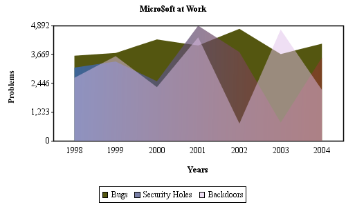 |
|
You can also control the color of the tick marks independant of the axis. |
|
ChartStroke xTicks= new ChartStroke( new BasicStroke( 1.0f ), Color.blue ); axisProperties.getXAxisProperties().setTickChartStroke( xTicks ); ChartStroke yTicks= new ChartStroke( new BasicStroke( 1.0f ), Color.green ); axisProperties.getYAxisProperties().setTickChartStroke( yTicks ); |
| 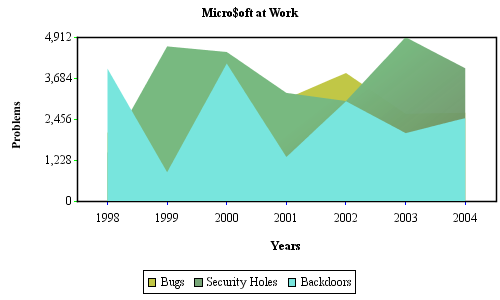 |
|
The Stroke is also user controlled. |
|
ChartStroke xTickStroke= new ChartStroke( new BasicStroke( 2.0f ), Color.blue ); axisProperties.getXAxisProperties().setTickChartStroke( xTickStroke ); |
| 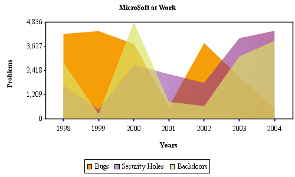 |
|
For large data sets, you most likely will not want to show every tick mark as there would be so many tick marks, the X-Axis would appear to be a thick line. In this case, you can set the X-Axis to only display those tick marks having a label. |
|
AxisProperties axisProperties= new AxisProperties(); axisProperties.getXAxisProperties().setShowTicks( AxisTypeProperties.TICKS_ONLY_WITH_LABELS ); |
| 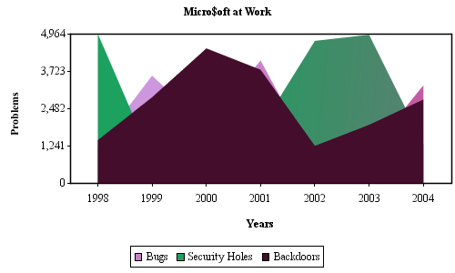 |
| Scale Font |
| The font used to render the scale items can be controlled through the AxisTypeProperties Object for each axis independently. |
|
AxisProperties axisProperties= new AxisProperties(); ChartFont xScaleChartFont= new ChartFont( new Font( "Georgia Negreta cursiva", Font.PLAIN, 13 ), Color.blue ); axisProperties.getXAxisProperties().setScaleChartFont( xScaleChartFont ); |
| 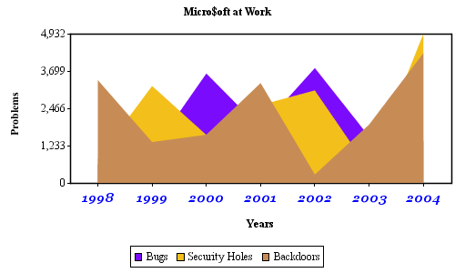 |
| Currency Signs |
| Add Currency Signs to the values on the value axis. This will use your localized Currency. |
|
DataAxisProperties dataAxisProperties= (DataAxisProperties) axisProperties.getYAxisProperties(); dataAxisProperties.setUseDollarSigns( true ); |
| 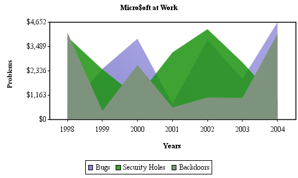 |
| Groupings |
| By default, groupings are inserted into values on the Y-Axis. You can toggle this by using the below command. This is also localized for your country. |
|
DataAxisProperties dataAxisProperties= (DataAxisProperties) axisProperties.getYAxisProperties(); dataAxisProperties.setUseCommas( false ); |
| 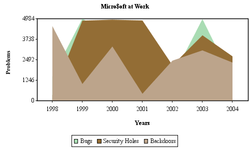 |
| Axis Titles |
|
Axis Titles are specified in the DataSet implementation for the chart. If a null values is specified
for either/both of the axis, no title will be displayed for that axis.
In this example, the X-Axis title is null so there is no title displayed there.. |
|
DataSeries dataSeries= new DataSeries( xAxisLabels, null, yAxisTitle, title );
|
| 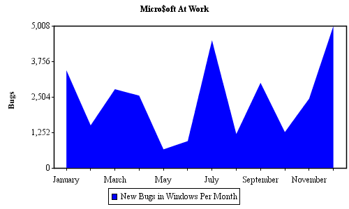 |
|
The Font used to render the titles can be controlled via the AxisTypeProperties Object for the axis. |
|
ChartFont yAxisFont= new ChartFont( new Font( "Arial Narrow", Font.BOLD, 14 ), Color.blue ); axisProperties.getYAxisProperties().setAxisTitleChartFont( yAxisFont ); |
| Background Paint |
| The background of the Axis uses the java.awt.Paint interface to control its rendering properties. There are several implementations of the java.awt.Paint Interface in the java.awt Package to choose from. |
| axisProperties.setBackgroundPaint( Color.yellow ); |
| 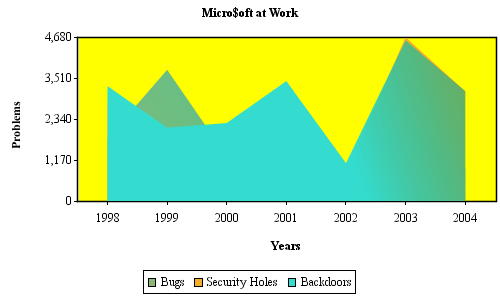 |